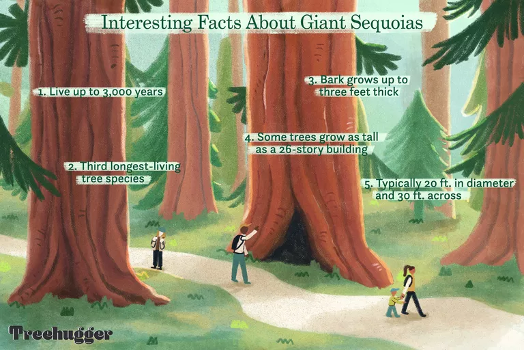

Chapter 1 - English text preprocessing basics¶
2022 January 19
Unstructured text - text you find in the wild in books and websites - is generally not amenable to analysis. Before it can be analyzed, the text needs to be standardized to a format so that Python can recognize each unit of meaning (called a “token”) as unique, no matter how many times it occurs and how it is stylized.
Remove punctuation and special characters/symbols
Remove stop words
Stem or lemmatize: convert all non-base words to their base form
Stemming/lemmatization and stop words (and some punctuation) are language-specific. NLTK works for English out-of-the-box, but you’ll need different code to work with other languages. Some languages (e.g. Chinese) also require segmentation: artificially inserting spaces between words. If you want to do text pre-processing for other languages, please let us know and we can put together a notebook for you.
from nltk.corpus import stopwords
from nltk.stem import WordNetLemmatizer
from string import punctuation
import pandas as pd
import seaborn as sns
from collections import Counter
import regex as re
# ensure you have the proper nltk modules
import nltk
nltk.download('words')
nltk.download('stopwords')
nltk.download('wordnet')
nltk.download('averaged_perceptron_tagger')
nltk.download('maxent_ne_chunker')
[nltk_data] Downloading package words to
[nltk_data] /Users/evanmuzzall/nltk_data...
[nltk_data] Package words is already up-to-date!
[nltk_data] Downloading package stopwords to
[nltk_data] /Users/evanmuzzall/nltk_data...
[nltk_data] Package stopwords is already up-to-date!
[nltk_data] Downloading package wordnet to
[nltk_data] /Users/evanmuzzall/nltk_data...
[nltk_data] Package wordnet is already up-to-date!
[nltk_data] Downloading package averaged_perceptron_tagger to
[nltk_data] /Users/evanmuzzall/nltk_data...
[nltk_data] Package averaged_perceptron_tagger is already up-to-
[nltk_data] date!
[nltk_data] Downloading package maxent_ne_chunker to
[nltk_data] /Users/evanmuzzall/nltk_data...
[nltk_data] Package maxent_ne_chunker is already up-to-date!
True
text = open("data/dracula.txt").read()
# print just the first 100 characters
print(text[:100])
The Project Gutenberg eBook of Dracula, by Bram Stoker
This eBook is for the use of anyone anywhere
Remove punctuation¶
Remember that Python methods can be chained together.
Below, a standard for loop loops through the punctuation module to replace any of these characters with nothing.
print(punctuation)
!"#$%&'()*+,-./:;<=>?@[\]^_`{|}~
for char in punctuation:
text = text.lower().replace(char, "")
print(text[:100])
the project gutenberg ebook of dracula by bram stoker
this ebook is for the use of anyone anywhere
Tokenize the text¶
Split each word on spaces.
tokens = text.split()
print(tokens[:20])
['the', 'project', 'gutenberg', 'ebook', 'of', 'dracula', 'by', 'bram', 'stoker', 'this', 'ebook', 'is', 'for', 'the', 'use', 'of', 'anyone', 'anywhere', 'in', 'the']
Remove stop words¶
Below is a list comprehension (a sort of shortcut for loop) that can accomplish this task for us.
filtered_text = [word for word in tokens if word not in stopwords.words('english')]
# show only the first 100 words
print(filtered_text[:100])
['project', 'gutenberg', 'ebook', 'dracula', 'bram', 'stoker', 'ebook', 'use', 'anyone', 'anywhere', 'united', 'states', 'parts', 'world', 'cost', 'almost', 'restrictions', 'whatsoever', 'may', 'copy', 'give', 'away', 'reuse', 'terms', 'project', 'gutenberg', 'license', 'included', 'ebook', 'online', 'wwwgutenbergorg', 'located', 'united', 'states', 'check', 'laws', 'country', 'located', 'using', 'ebook', 'title', 'dracula', 'author', 'bram', 'stoker', 'release', 'date', 'october', '1995', 'ebook', '345', 'recently', 'updated', 'march', '12', '2021', 'language', 'english', 'character', 'set', 'encoding', 'utf8', 'produced', 'chuck', 'greif', 'online', 'distributed', 'proofreading', 'team', 'start', 'project', 'gutenberg', 'ebook', 'dracula', 'dracula', 'dracula', 'bram', 'stoker', 'illustration', 'colophon', 'new', 'york', 'grosset', 'dunlap', 'publishers', 'copyright', '1897', 'united', 'states', 'america', 'according', 'act', 'congress', 'bram', 'stoker', 'rights', 'reserved', 'printed', 'united', 'states']
Lemmatize¶
Examples include:
Plural to singular (corpora to corpus)
Condition (better to good)
Gerund (running to run)
lmtzr = nltk.WordNetLemmatizer()
token_lemma = [ lmtzr.lemmatize(token) for token in filtered_text ]
Part of speech tags¶
Part of speech tags are labels given to each word in a text such as verbs, adverbs, nouns, pronouns, adjectives, conjunctions, and their various derivations and subcategories.
tagged = nltk.pos_tag(token_lemma)
chunked = nltk.chunk.ne_chunk(tagged)
Convert to dataframe¶
df = pd.DataFrame(chunked, columns=['word', 'pos'])
df.head()
| word | pos | |
|---|---|---|
| 0 | project | NN |
| 1 | gutenberg | NN |
| 2 | ebook | NN |
| 3 | dracula | NN |
| 4 | bram | NN |
df.shape
(73556, 2)
Visualize the 20 most frequent words¶
top = df.copy()
count_words = Counter(top['word'])
count_words.most_common()[:20]
[('said', 569),
('one', 509),
('could', 493),
('u', 463),
('must', 451),
('would', 428),
('shall', 427),
('time', 425),
('know', 420),
('may', 416),
('see', 398),
('come', 377),
('van', 322),
('hand', 310),
('came', 307),
('helsing', 300),
('went', 298),
('lucy', 296),
('go', 296),
('like', 278)]
words_df = pd.DataFrame(count_words.items(), columns=['word', 'count']).sort_values(by = 'count', ascending=False)
words_df[:20]
| word | count | |
|---|---|---|
| 209 | said | 569 |
| 256 | one | 509 |
| 155 | could | 493 |
| 180 | u | 463 |
| 319 | must | 451 |
| 162 | would | 428 |
| 278 | shall | 427 |
| 165 | time | 425 |
| 224 | know | 420 |
| 17 | may | 416 |
| 382 | see | 398 |
| 683 | come | 377 |
| 124 | van | 322 |
| 1169 | hand | 310 |
| 188 | came | 307 |
| 125 | helsing | 300 |
| 545 | went | 298 |
| 159 | go | 296 |
| 104 | lucy | 296 |
| 407 | like | 278 |
top_plot = sns.barplot(x = 'word', y = 'count', data = words_df[:20])
top_plot.set_xticklabels(top_plot.get_xticklabels(),rotation = 40);


Quiz: Redwood webscraping¶
This also works with data scraped from the web. Below is very brief BeautifulSoup example to save the contents of the Sequoioideae (redwood trees) Wikipedia page to a variable named text.
Read through the code below
Practice by repeating for a webpage of your choice
Combine methods on this page to produce a ready-to-be analyzed copy of “Frankenstein.txt”. This file is located in the
/datafolder
# import necessary libraries
from bs4 import BeautifulSoup
import requests
import regex
import nltk
Three variables will get you started¶
url- define the URL to be scrapedresponse- perform the get request on the URLsoup- create the soup object so we can parse the html
url = "https://en.wikipedia.org/wiki/Sequoioideae"
response = requests.get(url)
soup = BeautifulSoup(response.text, 'html')
Get the text¶
HTML (hypertext markup language) is used to structure a webpage and the content it contains, including text.
Below is a handy for loop that finds all everything within paragraph <p> tags.
# save in an empty string
text = ""
for paragraph in soup.find_all('p'):
text += paragraph.text
print(text)
Sequoioideae, popularly known as redwoods, is a subfamily of coniferous trees within the family Cupressaceae. It includes the largest and tallest trees in the world.
The three redwood subfamily genera are Sequoia from coastal California and Oregon, Sequoiadendron from California's Sierra Nevada, and Metasequoia in China. The redwood species contains the largest and tallest trees in the world. These trees can live for thousands of years. Threats include logging, fire suppression,[2] climate change, illegal marijuana cultivation, and burl poaching.[3][4][5]
Only two of the genera, Sequoia and Sequoiadendron, are known for massive trees. Trees of Metasequoia, from the single living species Metasequoia glyptostroboides, are much smaller.
Multiple studies of both morphological and molecular characters have strongly supported the assertion that the Sequoioideae are monophyletic.[6][7][8][9]
Most modern phylogenies place Sequoia as sister to Sequoiadendron and Metasequoia as the out-group.[7][9][10] However, Yang et al. went on to investigate the origin of a peculiar genetic artifact of the Sequoioideae—the polyploidy of Sequoia—and generated a notable exception that calls into question the specifics of this relative consensus.[9]
A 2006 paper based on non-molecular evidence suggested the following relationship among extant species:[11]
M. glyptostroboides (dawn redwood)
S. sempervirens (coast redwood)
S. giganteum (giant sequoia)
Taxodioideae
A 2021 study using molecular evidence found the same relationships among Sequoioideae species, but found Sequoioideae to be the sister group to the Athrotaxidoideae (a superfamily presently known only from Tasmania) rather than to Taxodioideae. Sequoioideae and Athrotaxidoideae are thought to have diverged from each other during the Jurassic.[12]
Reticulate evolution refers to the origination of a taxon through the merging of ancestor lineages.
Polyploidy has come to be understood as quite common in plants—with estimates ranging from 47% to 100% of flowering plants and extant ferns having derived from ancient polyploidy.[13] Within the gymnosperms however it is quite rare. Sequoia sempervirens is hexaploid (2n= 6x= 66). To investigate the origins of this polyploidy Yang et al. used two single copy nuclear genes, LFY and NLY, to generate phylogenetic trees. Other researchers have had success with these genes in similar studies on different taxa.[9]
Several hypotheses have been proposed to explain the origin of Sequoia's polyploidy: allopolyploidy by hybridization between Metasequoia and some probably extinct taxodiaceous plant; Metasequoia and Sequoiadendron, or ancestors of the two genera, as the parental species of Sequoia; and autohexaploidy, autoallohexaploidy, or segmental allohexaploidy.
Yang et al. found that Sequoia was clustered with Metasequoia in the tree generated using the LFY gene but with Sequoiadendron in the tree generated with the NLY gene. Further analysis strongly supported the hypothesis that Sequoia was the result of a hybridization event involving Metasequoia and Sequoiadendron. Thus, Yang et al. hypothesize that the inconsistent relationships among Metasequoia, Sequoia, and Sequoiadendron could be a sign of reticulate evolution (in which two species hybridize and give rise to a third) among the three genera. However, the long evolutionary history of the three genera (the earliest fossil remains being from the Jurassic) make resolving the specifics of when and how Sequoia originated once and for all a difficult matter—especially since it in part depends on an incomplete fossil record.[10]
Sequoioideae is an ancient taxon, with the oldest described Sequoioideae species, Sequoia jeholensis, recovered from Jurassic deposits.[14] A genus Medulloprotaxodioxylon, reported from the late Triassic of China supports the idea of a Norian origin.[1]
The fossil record shows a massive expansion of range in the Cretaceous and dominance of the Arcto-Tertiary Geoflora, especially in northern latitudes. Genera of Sequoioideae were found in the Arctic Circle, Europe, North America, and throughout Asia and Japan.[15] A general cooling trend beginning in the late Eocene and Oligocene reduced the northern ranges of the Sequoioideae, as did subsequent ice ages.[16] Evolutionary adaptations to ancient environments persist in all three species despite changing climate, distribution, and associated flora, especially the specific demands of their reproduction ecology that ultimately forced each of the species into refugial ranges where they could survive.
The entire subfamily is endangered. The IUCN Red List Category & Criteria assesses Sequoia sempervirens as Endangered (A2acd), Sequoiadendron giganteum as Endangered (B2ab) and Metasequoia glyptostroboides as Endangered (B1ab).
The two California redwood species, since the early 19th century, and the Chinese redwood species since 1948, have been cultivated horticulturally far beyond their native habitats. They are found in botanical gardens, public parks, and private landscapes in many similar climates worldwide. Plantings outside their native ranges particularly are found in California, the coastal Northwestern and the Eastern United States, areas of China, Ireland,[17] Germany, the United Kingdom, Australia and near Rotorua New Zealand.[18] They are also used in educational projects recreating the look of the megaflora of the Pleistocene landscape.
New World Species:
New World Species:
Regular expressions¶
Remember how we did preprocessing the long way above? You might find that using egular expressions are easier. Check out the tutorial and cheatsheet to find out what the below symbols mean and write your own code.
text = re.sub(r'\[[0-9]*\]',' ',text)
text = re.sub(r'\s+',' ',text)
text = re.sub(r'\d',' ',text)
text = re.sub(r'[^\w\s]','',text)
text = text.lower()
print(text)
sequoioideae popularly known as redwoods is a subfamily of coniferous trees within the family cupressaceae it includes the largest and tallest trees in the world the three redwood subfamily genera are sequoia from coastal california and oregon sequoiadendron from californias sierra nevada and metasequoia in china the redwood species contains the largest and tallest trees in the world these trees can live for thousands of years threats include logging fire suppression climate change illegal marijuana cultivation and burl poaching only two of the genera sequoia and sequoiadendron are known for massive trees trees of metasequoia from the single living species metasequoia glyptostroboides are much smaller multiple studies of both morphological and molecular characters have strongly supported the assertion that the sequoioideae are monophyletic most modern phylogenies place sequoia as sister to sequoiadendron and metasequoia as the outgroup however yang et al went on to investigate the origin of a peculiar genetic artifact of the sequoioideaethe polyploidy of sequoiaand generated a notable exception that calls into question the specifics of this relative consensus a paper based on nonmolecular evidence suggested the following relationship among extant species m glyptostroboides dawn redwood s sempervirens coast redwood s giganteum giant sequoia taxodioideae a study using molecular evidence found the same relationships among sequoioideae species but found sequoioideae to be the sister group to the athrotaxidoideae a superfamily presently known only from tasmania rather than to taxodioideae sequoioideae and athrotaxidoideae are thought to have diverged from each other during the jurassic reticulate evolution refers to the origination of a taxon through the merging of ancestor lineages polyploidy has come to be understood as quite common in plantswith estimates ranging from to of flowering plants and extant ferns having derived from ancient polyploidy within the gymnosperms however it is quite rare sequoia sempervirens is hexaploid n x to investigate the origins of this polyploidy yang et al used two single copy nuclear genes lfy and nly to generate phylogenetic trees other researchers have had success with these genes in similar studies on different taxa several hypotheses have been proposed to explain the origin of sequoias polyploidy allopolyploidy by hybridization between metasequoia and some probably extinct taxodiaceous plant metasequoia and sequoiadendron or ancestors of the two genera as the parental species of sequoia and autohexaploidy autoallohexaploidy or segmental allohexaploidy yang et al found that sequoia was clustered with metasequoia in the tree generated using the lfy gene but with sequoiadendron in the tree generated with the nly gene further analysis strongly supported the hypothesis that sequoia was the result of a hybridization event involving metasequoia and sequoiadendron thus yang et al hypothesize that the inconsistent relationships among metasequoia sequoia and sequoiadendron could be a sign of reticulate evolution in which two species hybridize and give rise to a third among the three genera however the long evolutionary history of the three genera the earliest fossil remains being from the jurassic make resolving the specifics of when and how sequoia originated once and for all a difficult matterespecially since it in part depends on an incomplete fossil record sequoioideae is an ancient taxon with the oldest described sequoioideae species sequoia jeholensis recovered from jurassic deposits a genus medulloprotaxodioxylon reported from the late triassic of china supports the idea of a norian origin the fossil record shows a massive expansion of range in the cretaceous and dominance of the arctotertiary geoflora especially in northern latitudes genera of sequoioideae were found in the arctic circle europe north america and throughout asia and japan a general cooling trend beginning in the late eocene and oligocene reduced the northern ranges of the sequoioideae as did subsequent ice ages evolutionary adaptations to ancient environments persist in all three species despite changing climate distribution and associated flora especially the specific demands of their reproduction ecology that ultimately forced each of the species into refugial ranges where they could survive the entire subfamily is endangered the iucn red list category criteria assesses sequoia sempervirens as endangered a acd sequoiadendron giganteum as endangered b ab and metasequoia glyptostroboides as endangered b ab the two california redwood species since the early th century and the chinese redwood species since have been cultivated horticulturally far beyond their native habitats they are found in botanical gardens public parks and private landscapes in many similar climates worldwide plantings outside their native ranges particularly are found in california the coastal northwestern and the eastern united states areas of china ireland germany the united kingdom australia and near rotorua new zealand they are also used in educational projects recreating the look of the megaflora of the pleistocene landscape new world species new world species
Going further¶
We have used indivual words in this example, but what about n-grams? Also read through this n-gram language model with nltk.
There are also more optimal ways to preprocess your text. Cehck out the spaCy 101 guide to try it out yourself and attend the CIDR Python Introduction to Text Analysis workshop on February 8, 2022. Register here.